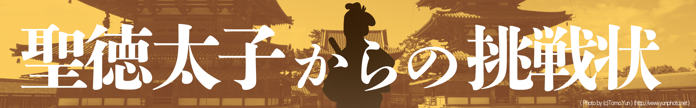
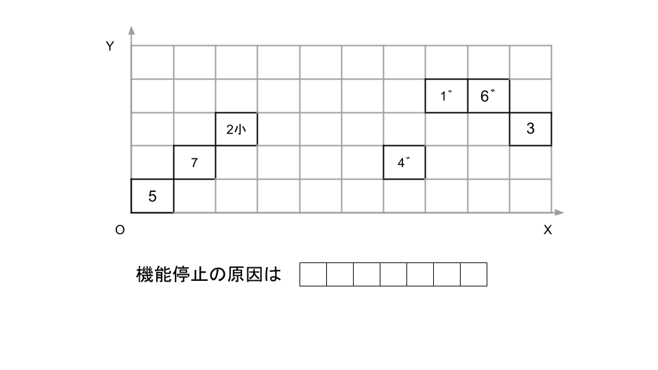
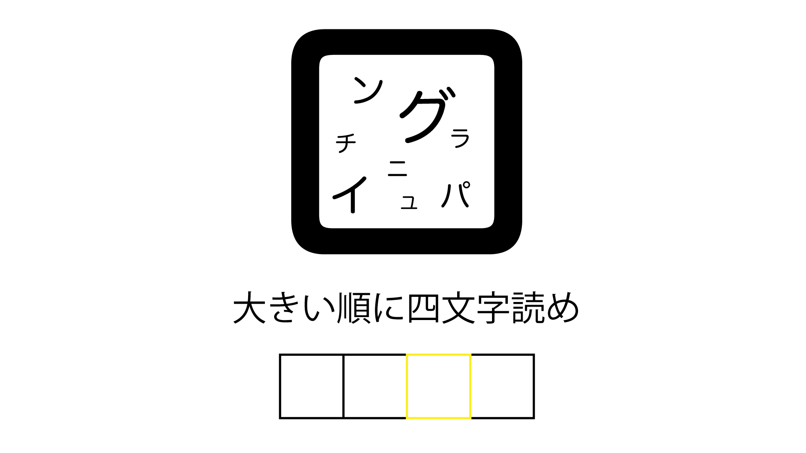
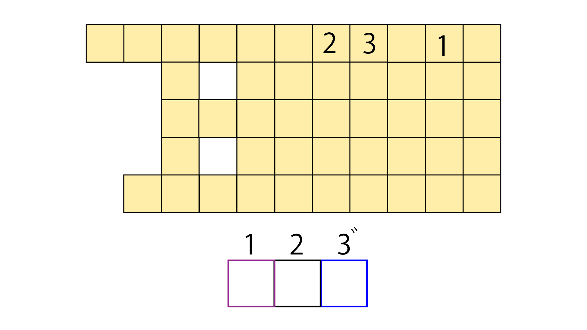
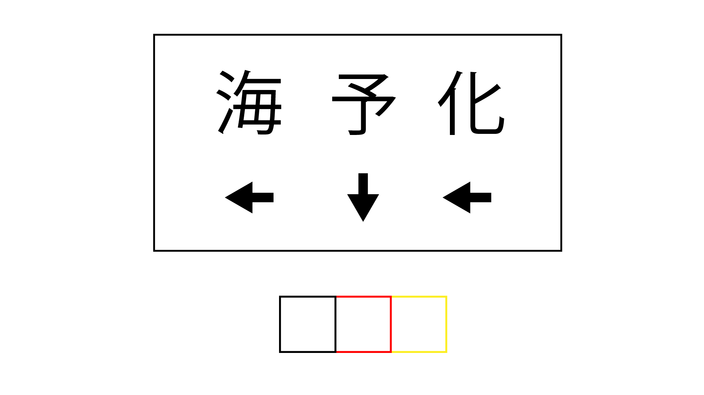
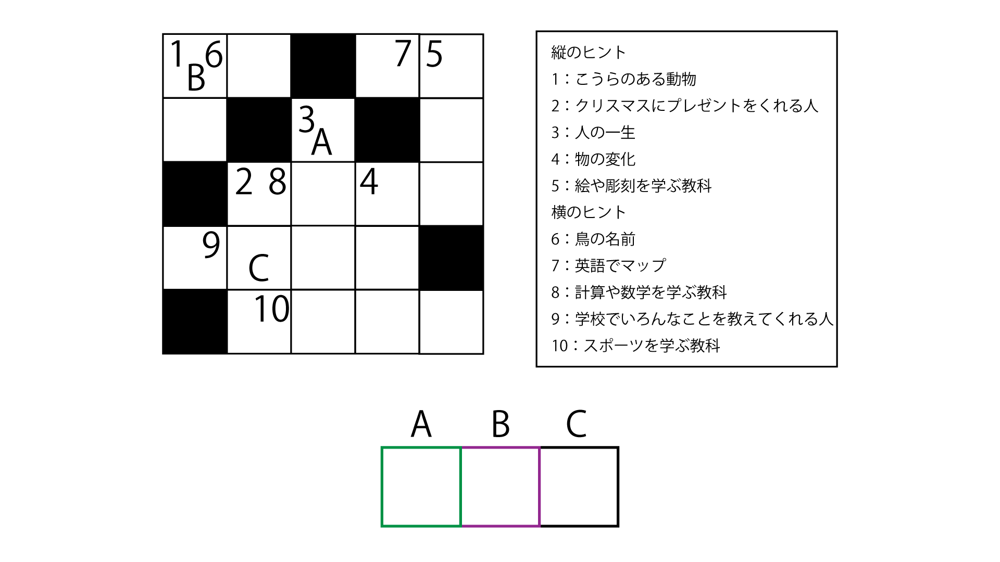
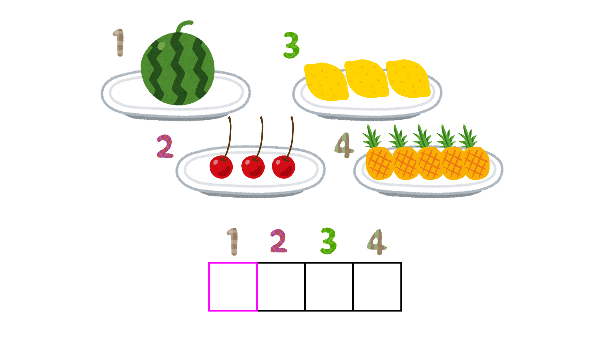
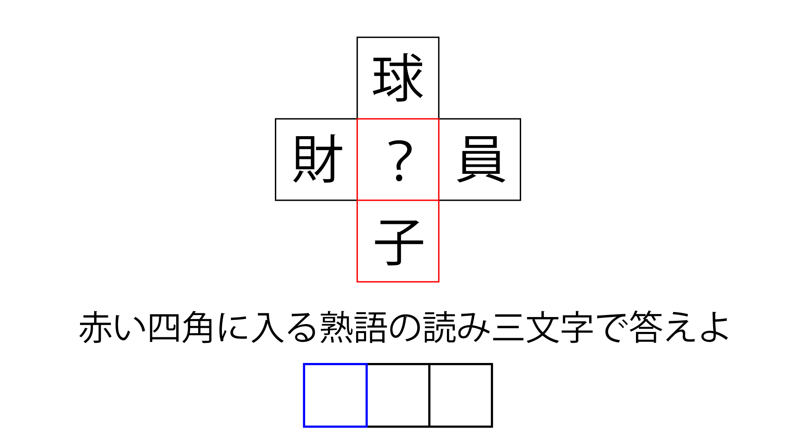
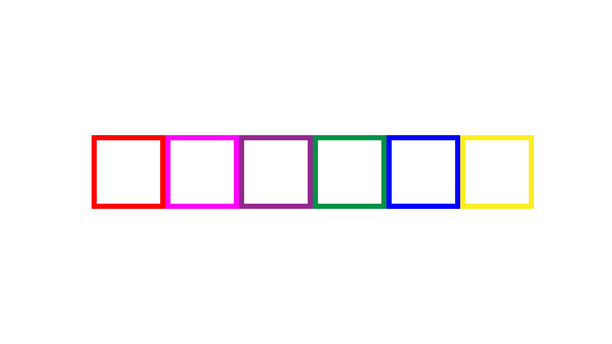

タイムマシンサンキューな、
明日
あした
10
時
じ
ちょうどにでるよ
タイムスリップは1分につき60年だから
忘
わす
れないようにね！
分
わ
かってるって。5分で300年、だろ？
2407年からひくんだぞー
それと
事故
じこ
と
充電
じゅうでん
切
ぎ
れには気をつけて！
大丈夫
だいじょうぶ
だって〜
まあ、
楽
たの
しんできなよ
おうよ！
た、
助
たす
けて！
昨日
きのう
もらったタイムマシンで
事故
じこ
を
起
お
こしてしまった
しかも
知
し
らない
時代
じだい
に
取
と
り
残
のこ
されてるんだよ...
頼
たの
む、
助
たす
けてくれ
だから
気
き
をつけてって
言
い
ったのに...
とにかくまずは
時代
じだい
を
把握
はあく
しないと、
近
ちか
くに
何
なに
かないの？
えーと...
こんな
石碑
せきひ
がある
遣隋使
けんずいし
か...
遣隋使
けんずいし
って
言
い
ってもたくさんいるよなあ...
他
ほか
には
何
なに
かない？
ドラレコにこんな
映像
えいぞう
があった
うーん...
他
ほか
には？
他
ほか
には
特
とく
に
無
な
い
何年
なんねん
だろう...
数字
すうじ
だけ
打
う
ち
込
こ
んでね
おお！さすがだぜ！
あれは
小野妹子
おののいもこ
が
乗
の
ってるやつかな、
多分
たぶん
それがタイムワープに
巻
ま
き
込
こ
まれたんだ
そんな
有名人
ゆうめいじん
を
巻
ま
き
込
こ
んで
大丈夫
だいじょうぶ
かよ
僕
ぼく
に
言
い
われても
とりあえず
白亜紀
はくあき
とかじゃなくてよかったし、
故障
こしょう
した
原因
げんいん
を
探
さが
そうか
でも
俺
おれ
は
機械
きかい
全然
ぜんぜん
分
わ
からないぞ？
画面操作
がめんそうさ
でAIが
答
こた
えてくれるよ
左上
ひだりうえ
のボタンを
押
お
せばいけるはず
おっ、でてきた！けどなんか
暗号化
あんごうか
されてる！

AIも
不調
ふちょう
みたいだ、えーとこれは...
充電
じゅうでん
切
ぎ
れだ！
おお！
ってこれも
言
い
ったよね...
ご、ごめん
でも
原因
げんいん
がわかっただけ
良
よ
かった、
充電
じゅうでん
切
ぎ
れなら
手回
てまわ
しの
発電機
はつでんき
があるからそれを
回
まわ
せば
充電
じゅうでん
できるよ
よし、これで
帰
かえ
れ...って、
重
おも
くて
回
まわ
せないんだが
あ、そういえば負荷の調整忘れてた
馬なら回せるけど、この時代馬は貴重なんだ
その辺の人に借りられないか聞いてくるぜ！
偉い人の部下に聞いたら「我々全員の出す謎を解ければ我らの主人に会わせてやろう！はっはっは！」と言われた
この辺で馬を持ってるのはその人だけなんだってよ
この時代の偉い人は聖徳太子だから、その部下と言えば冠位十二階かな
ちなみに頭には何かぶってた？
6組から順番に謎が出されて、最初のやつらは灰色と黒
その人達は「智」の組だ、冠位十二階は「智、義、信、礼、仁、徳」の順でえらいから
さすが聖徳太子、部下も有能だな
最初はこんな人たち

次はこんな人

3番目

4番目

5番

6

6

ひらがなで入力してね
や、やっと終わった...
すげえ！役人達おどろいてたぜ！
お前も少しは手伝ってくれよ...
まあまあ
見事
みごと
だ、
若
わか
きものよ...
法隆寺の大宝蔵院の中庭に面した壁には、外壁にはあまり多く使われていない色が多く使われているが、その色は？
これが分かるということは本当に未来から来たようですね
私が信じた神仏の道が幾千年も信じられていて、本当によかった
約束通り馬はお貸ししましょう
いや〜、それにしても大変だったな
主に僕がな！
すまんって〜、でもありがとよ！
まあでも、こっちも無事戻れて安心したよ
そうだな、ん？
どうかした？
また別の時代に来てしまった気がする
えっ
ごめん、助けて...
もう勝手にしてくれ
そ、そんなあ
.png)